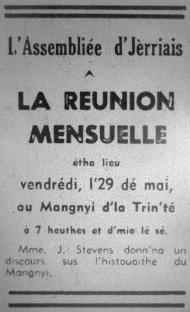

L'Assembliée d'Jèrriais
Rêunion mensuelle au Mangni d'La Trin'té
 A bein près nénante membres lus rêunîtent vendrédi, l'29 dé mai, au Mangni d'La Trin'té pour la rêunion mensuelle. lé rapport du mais d'avri fut liu et accepté, chînq nouvieaux membres fûtent êlus et la correspondance fut liue.
A bein près nénante membres lus rêunîtent vendrédi, l'29 dé mai, au Mangni d'La Trin'té pour la rêunion mensuelle. lé rapport du mais d'avri fut liu et accepté, chînq nouvieaux membres fûtent êlus et la correspondance fut liue.
D'vant qué Mde. Joan Stevens c'menchit san discours, l'Mâjeur J.R. Riley adréchit la rêunion en disant qu'san péthe et grand-péthe avaient fait d'lus mus à garder l'mangni. La propriêté est fèrmée d'eune manniéthe moderne et touos les travailleurs sont des Jèrriais. Un tribut fut payi à san jardîngni pour les bieaux gardîns qu'les membres vîtent quand i' fîtent lus c'mîn en d'vant d'la maîson pour lé discours à Mde. Stevens.

Les preunmié maîsons du mangni 'taient probabliément d'l'aut' côté d'la route à cause qué les clios sont applés Les Vieux Manoirs. L'êtchusson des dé Carteret et Lemprière qu'avaient héthité le fief et la maîson du mangni des dé St. Martin 'tait sus l'sud r'cordant lé mathiage dé Âmice dé Carteret à Catherine Lemprière en 1578.
En mauvaise condition
Benjamin La Cloche dit qué en 1641 Âmice dé Carteret, seigneur d'La Trin'té, c'menchit à r'bâti lé mangni à neu. Mais auprès bein d's années les dé Carteret le laîssîtent en mauvaise condition auprès aver 'té héthité par iun et l'autre, et en 1870 lé Colonel Swann l'accatit, mais quand san fis l'héthitit i' né d'meuthit pas d'dans et i' vînt înhabitabl'ye.
En 1909, Monsr. Athelstan Riley l'accatit et la r'mînt à neu et pour aver d'la pierre assaîsonnée il accatit eune maîson en ruinne, L'Ancienneté à
St. Brélade, et fit sèrvi difféthente parties, et la montée en touothelle tchi fut mînse dans l'gardîn du mangni.
Les dernièrs dé Carteret en 1820 gardaient les comptes d'la fèrme comme d'à ch't heu mais lé prix 'té bein difféthent pour eune livre dé beurre (un ch'lîn) et douze sous pour eune douzaine d'oeufs et i' gardaient des vaques, brébis, couochons et craîssaient du grain et des navets, et au jour d'aniet y'a étout des vaques, patates, du grain et du seîgl'ye au mangni.
L'fis du Rouai?
La légende du Prînce Charles et Marguérite dé Carteret - i' n'y'a pas d'preuves dé naîssance, mais y'a ieu bein des histouéthes dé fabritchies. Dr. Hoskins dé Dgèrnésy la mentionne en 1850-60. Mais, comme ch'est la page du r'gistre concernant l's affaithes dé 1648 tchi manque et l'Prînce sortit en 1646 ch'est hardi împossibl'ye qué Jacques La Cloche 'tait l'fis du Rouai.
Mde. Stevens èrchut d's appliaudîss'ments pour san discours qu'avait 'té si întérêssant, et lé Président la r'mèrcyit bein des fais d'la part dé tous. Auprès, des raffraîchissements fûtent sèrvis par l'Mâjeur Riley et sa danme et les membres lus rêjouîtent à marchi dans les gardîns, vaie la belle p'tite chapelle, et les niches ès tchians d'chasse. Auprès, l'Sénateu Romeril èrmèrcyit l'Mâjeur Riley et sa danme bein sîncéth'ment pour la beinv'nue et pour aver r'chus les membres dé chutte manniéthe et adréchit Mde. Riley auve tchiques patholes en Angliais.
L'Sénateu Romeril dit étout qu'il avait r'gret d'entendre qué l'Sieur R. Le Mottée 'tait malade et env'yit les milleurs souhaits dé L'Assembliée et dit en même temps qué s'i' y'avait d'autres membres malades dé l'faithe à saver à la Sécrétaithe.
Le Service Annuel
Les annonces suivîtent: Lé Service Annuel étha lieu dans la Chapelle des Siex Rues, dînmanche, l'28 dé juîn, à 3 heuthes. Les pratiques pour lé tchoeur éthont lieu vendrédi, l'19, et l'28 d'juîn, à un quart dé huit dans la Chapelle des Siex Rues.
1970
Viyiz étout: